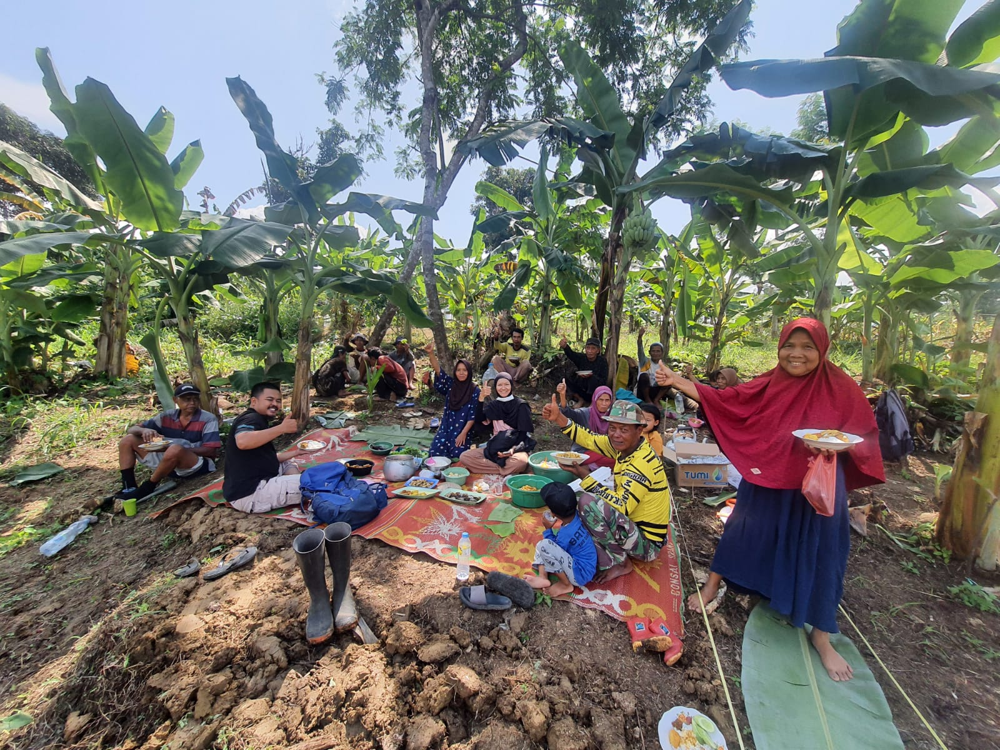

Memajukan Petani dan
Pertanian Indonesia
Bersama
Sembada Farm
Dengan konsep bermitra untuk saling mendukung, berbagi ilmu dan juga pengalaman diantara Petani dan Mitra Petani dengan tujuan untuk memajukan kesejahteraan bersama, meningkatkan dampak positif dan akses kepada komoditas unggulan yang bisa di hasilkan kepada pasar yang luas dalam kemitraan program pertanian yang berkelanjutan.
👥
3 Pengalaman
Petani Bermitra
Petani Bermitra
📍
2 Mitra
Aktif Saat Ini
Aktif Saat Ini
📦
lebih dari 220 Kg
Total Panen
Total Panen
